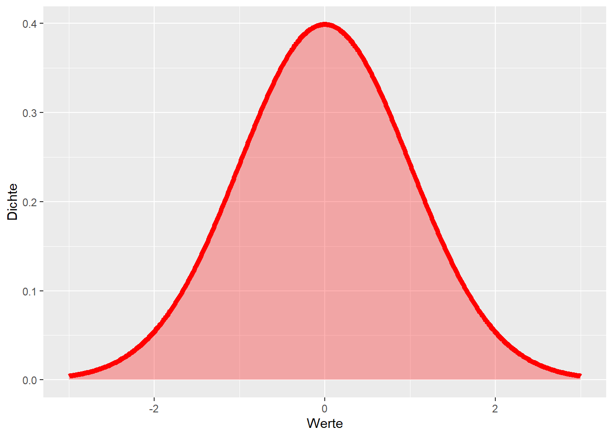
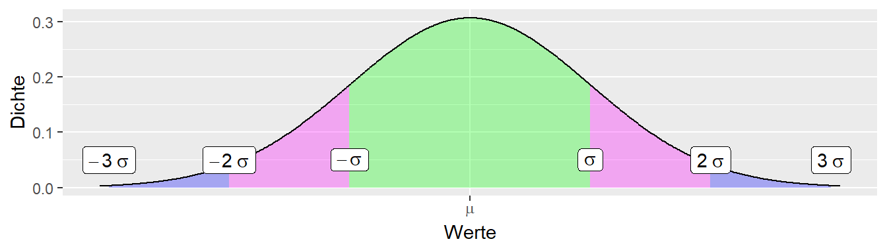
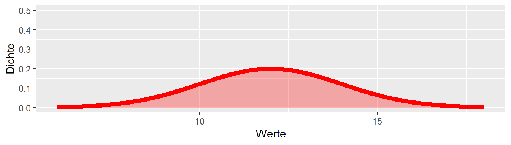
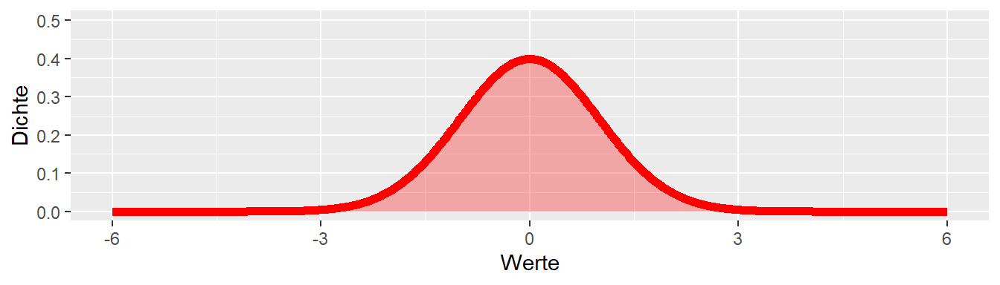
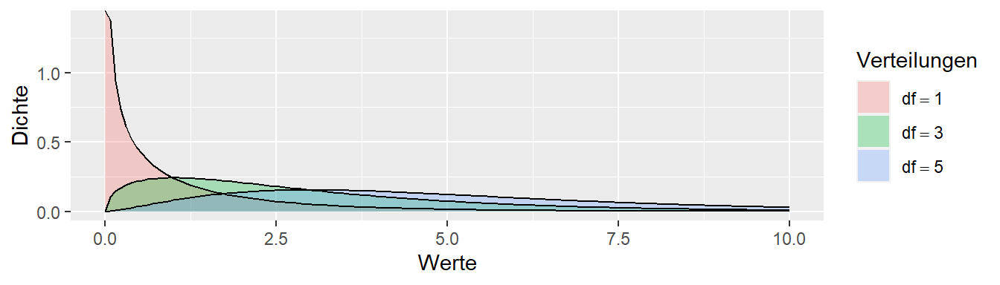
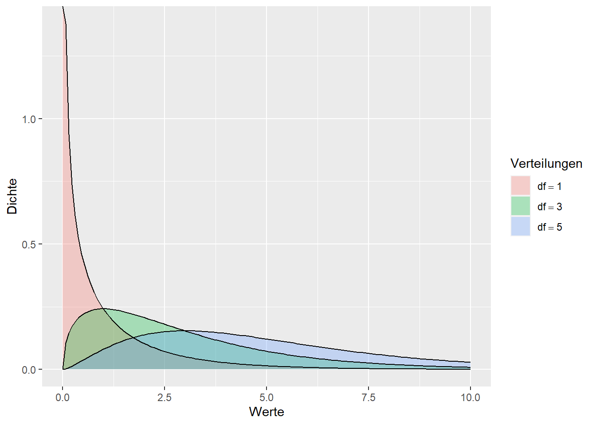
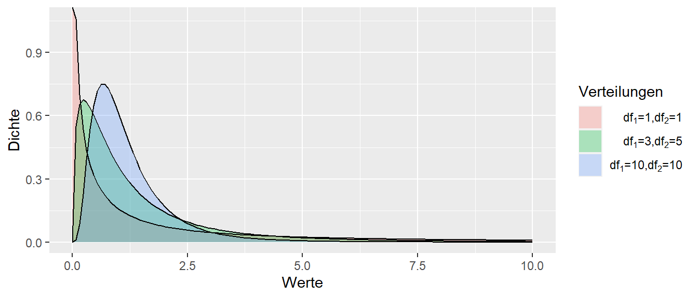

3 Verteilungen
4 Die Normalverteilung
4.1 Normalverteilung - \(f(x|\mu,\sigma^2) = \frac{1}{\sqrt{2 \pi \sigma^2}}e^{\left(-\frac{(x-\mu)^2}{2\sigma^2}\right)}\)

4.2 Zentraler Grenzwertsatz oder Warum die Normalverteilung überall auftaucht.
Seien \(X_1, X_2, \ldots, X_n\) n unabhängige, gleichverteilte Zufallsvariablen mit \(E(X_i)=\mu\) und \(Var(X_i)=\sigma^2\). \[ \lim_{n\to\infty}\frac{\bar{x} - \mu}{\frac{\sigma}{\sqrt{n}}}\ \rightarrow\ \mathcal{N}(\mu=0,\sigma^2=1) \]
4.3 Normalverteilung und Standardabweichung

4.4 Normalverteilung und Standardabweichung
\[P(x\in[\mu-1.96\sigma, \mu+1.96\sigma]) = 0.95\]
4.5 Standardnormalverteilung \(\phi(x)\)

4.6 Abbildung N(\(\mu\),\(\sigma\)) auf N(\(0\),\(1\))


4.7 z-Transformation allgemein bzw. Standardisierung
5 Verteilungszoo
5.1 t-Verteilung

5.2 \(\chi^2\)-Verteilung

5.3 F-Verteilung
